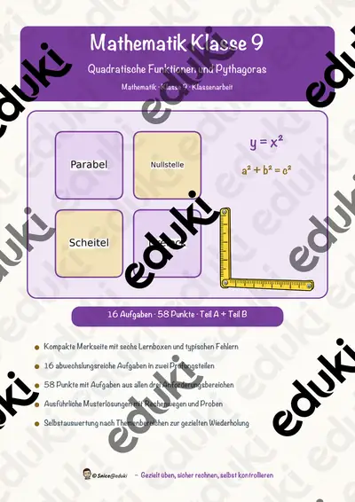
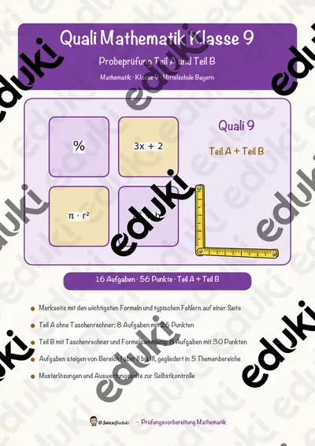
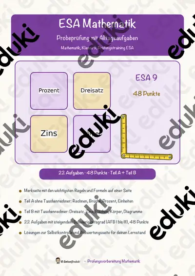
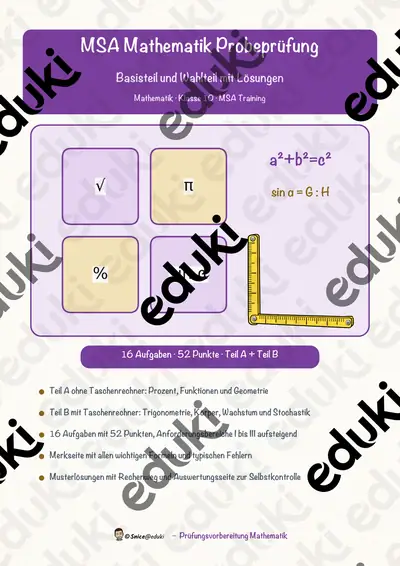
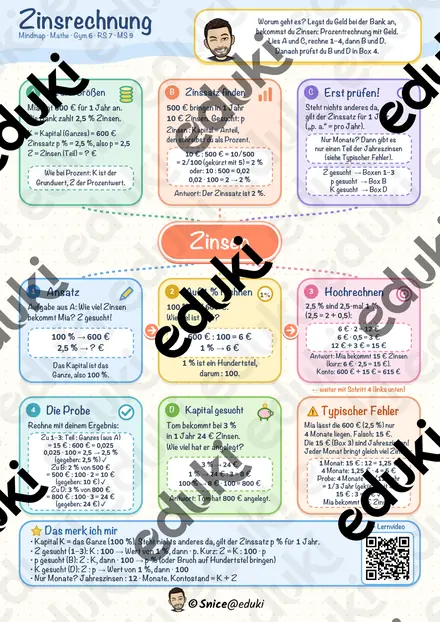

Geometrische Körper - Steckbrief Prisma - Mathe - Geometrie - Differenziert
Mit diesem Material erhalten Sie einen Steckbrief zum Thema:
Geometrische Körper - Steckbrief Prisma - Mathe - Geometrie -
Differenziert inkl. Lösung.
Der Steckbrief deckt neben der Grafik zum Prisma die folgenden Punkte ab: Anzahl der Kanten
Anzahl der Ecken
Anzahl der Flächen
Formel zur Berechnung der Oberfläche
Formel zur Berechnung des Volumens
Formel zur Berechnung der Grundfläche
Formel zur Berechnung der Mantelfläche
Aufbau
Alltagsbeispiel
Körpernetz
Lernvideo
Zum Steckbrief erhalten Sie auch eine differenzierte Variante mit einem Körpernetz.
Viel Spaß mit dem Material! :)
FachMathematik
KlasseKl. 9–10
SchulformSek I Mittlere Schulform
MaterialartArbeitsblätter, Unterrichtsreihen, Merkblätter, Präsentationen/Tafelbilder
Ähnliche Materialien

Klassenarbeitstrainer Mathematik Klasse 9 – Quadratische Funktionen und Pythagoras

Quali Mathematik 9 Probeprüfung Teil A und B mit Lösungen, Mittelschule Bayern

ESA Mathematik Klasse 9: Probeprüfung mit Alltagsaufgaben, Teil A und B, mit Lösungen

MSA Mathematik Klasse 10 Probeprüfung Teil A und B mit Lösungen, Farbe und SW

Zinsrechnung Mindmap + 4 Arbeitsblätter mit Lösungen + Lernvideo (QR) – Zinsen, Zinssatz, Kapital & Monatszinsen

Geometrische Körper - Steckbrief Zylinder - Mathe - Geometrie - Differenziert

Geometrische Körper - Steckbrief Kegel - Mathe - Geometrie - Differenziert